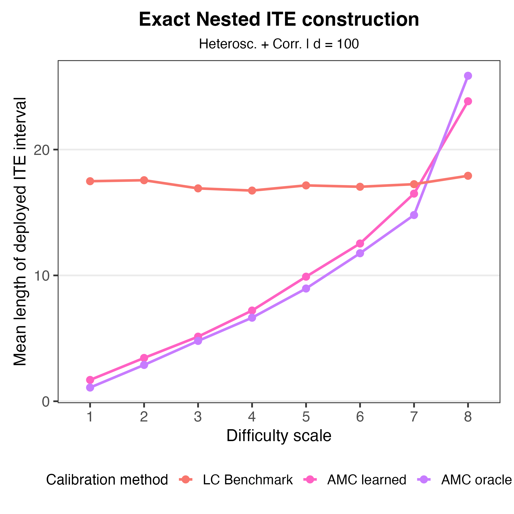
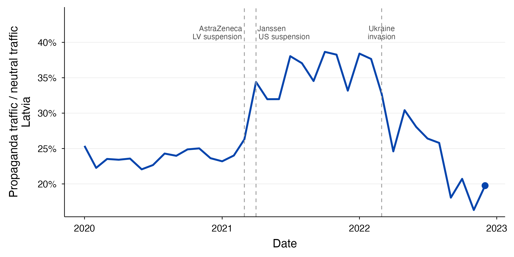
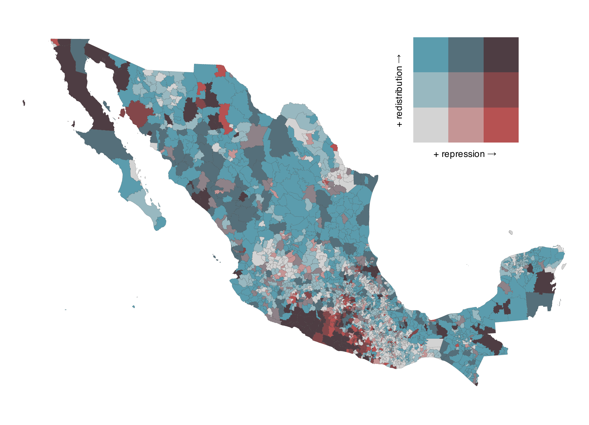

I currently work as a predoctoral research fellow
at Harvard University, working with
Emily Breza
and
Davide Viviano
on development economics and causal inference for meta-analysis of
experimental and quasi-experimental evidence. I enjoy doing research in economics and causal inference.
I hold a B.S. in Economics and an M.A. in Economic Theory from ITAM in
Mexico City; both programs included graduate coursework in economics,
computer science, and mathematics. I am also a proud former co-owner of
a small seafood restaurant near campus.
Writing Sample
Adaptive Calibration for Efficient Individual Treatment Effect Prediction Sets
J. David Martínez Hernández
Draft · April 2026
I extend Lei and Candès (2021)
Conformal Inference of Counterfactuals and Individual Treatment Effects
by modifying the calibration step for conformity scores. The method (AMC) groups experimental units with similar conformity-score behavior and calibrates within each group rather than globally.
Numerical studies show that AMC produces shorter prediction intervals and improves treatment-assignment decisions by shifting conservativeness from easier to harder cases, while preserving finite-sample validity guarantees.

Draft available upon request.
Working Papers
Foreign Propaganda, Trust, and Public Policy: Evidence from Russian
Misinformation in the Baltics
We study whether Russian state-sponsored misinformation and propaganda alter consequential behavior and political attitudes in former Soviet states. Using disruptions to Western COVID-19 vaccines and data from Latvia, we show that pro-Kremlin media traffic rose and Moderna/Pfizer vaccination fell more in municipalities with larger ethnic Russian shares after the events, patterns that reversed after Russia's invasion of Ukraine and Latvia's restrictions on Russian state-backed media.

Full abstract
We study whether Russian state-sponsored misinformation and propaganda alter consequential behavior and political attitudes in former Soviet states. We exploit two salient disruptions to Western COVID-19 vaccines, the temporary suspension of AstraZeneca and the delayed Janssen rollout, that Russian state-backed media used to promote Sputnik V and discredit Western institutions. Combining online traffic, administrative vaccination records, survey data, and municipal ethnic composition, we estimate differential responses across Latvian municipalities. Following each vaccine-safety event, traffic shifts toward pro-Kremlin Russian-language outlets and Moderna/Pfizer vaccination falls more in municipalities with larger ethnic Russian shares. Both patterns reverse after Russia's invasion of Ukraine and Latvia's restrictions on Russian state-backed media. The vaccination effects are concentrated in first doses and cohorts partly schooled under Soviet rule, and we find no analogous pattern in Estonia or Lithuania. Eurobarometer estimates also show a relative worsening in attitudes toward Latvian democracy and the EU among Russian-language respondents following the vaccine-safety events.
Coercive Capacity, Social Dissent, Repression or Redistribution? Evidence
from Authoritarian Mexico
We study how inherited coercive capacity shapes authoritarian responses to rising dissent. Using newly digitized records of repression, we show that after a sharp rise in social dissent in the mid-1960s, Mexican municipalities with stronger militia presence experienced more repression and less land redistribution.

Full abstract
Why do authoritarian regimes exhibit subnational variation in their use
of repression versus redistribution to manage local dissent? We develop
a model in which an autocrat's localized response to dissent depends on
incomplete information about the geography of people's discontent and
the government's coercive capacity, a feature that authoritarian
governments often inherit from the past. The model predicts that when
dissent rises, rulers are more likely to rely on repression rather than
redistribution in areas with strong inherited coercive capacity. We then
test these predictions using novel data from twentieth-century Mexico
under PRI rule. Our empirical strategy exploits a sharp increase in
overall dissent in the mid-1960s and three sources of subnational
variation: (1) a large-scale land reform that redistributed over half of
all agricultural land between 1910 and 1992; (2) the localized presence
of regime-aligned rural militias with revolutionary origins; and (3)
newly digitized archival records documenting individual instances of
repression over time. Difference-in-Differences and Instrumental
Variable estimates indicate that after the sudden increase in dissent,
municipalities with a stronger militia presence experienced more
repression events and less land redistribution than areas with weaker or
no militia presence. Our findings demonstrate how historical variation
in inherited coercive capacity and informational frictions can shape the
subnational logic of authoritarian control.